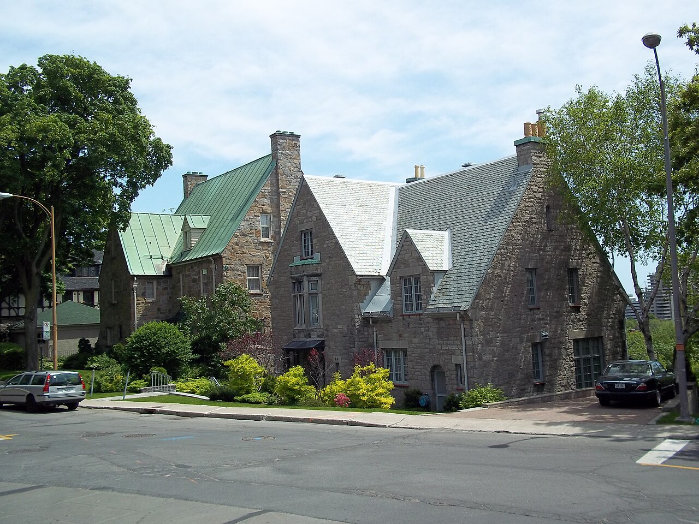

| Place | Local name | Phase years | Storeys | Roof | Window | Cladding | Garage |
|---|---|---|---|---|---|---|---|
| Town of Mount Royal | English Manor House Maison manoir anglais | 1935 – 1955 | 2 | gabled-multi | vertical-2to1 | stone-natural, clay-brick-red, stucco, half-timbering | attached-set-back |
| Westmount | Tudor Revival house Maison de style néo-Tudor | 1915 – 1945 | – | – | vertical | stone, stucco, half-timbering | – |

